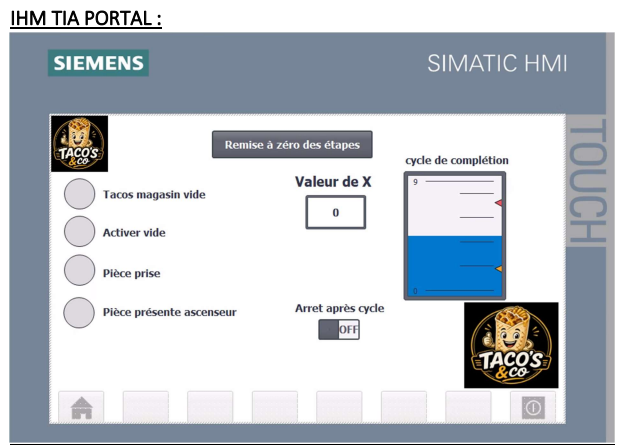
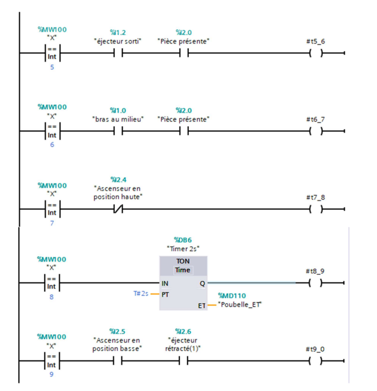

Environnement d'atelier interconnecté
Projet réalisé au Semestre 2 du BUT GEII à l'IUT de Toulouse. Travail conduit en binôme sur une station industrielle de transport et de tri de pièces entre les postes A et C, intégrée au sein d'une ligne automatisée complète à 5 stations.
Cahier des charges & Automatisation
Automatiser le cycle de transit continu des pièces d'un point A à un point B de la chaîne, gérer les séquences de convoyage par vérins et éliminer tout risque de blocage ou de collision matérielle.
Rôle individuel & Responsabilités majeures
Pour assurer le succès du binôme, j'ai pris personnellement en charge :
- Conception intégrale du Grafcet : Rédaction de l'algorithme sous draw.io en respectant scrupuleusement les règles du langage (transitions, réceptivités et synchronisations).
- Développement sur TIA Portal : Programmation complète du Grafcet en langage automate fonctionnel (réalisée avec rigueur en autonomie).
- Conception & Codage de l'IHM : Création de tous les boutons de commande et voyants dynamiques avec une charte graphique ergonomique pour faciliter le diagnostic opérateur.
Environnement logiciel & matériel
Preuves concrètes & Performance
Validation complète du cycle lors des tests unitaires et d'intégration sur site : cycle de convoyage 100 % fluide, aucun défaut de synchronisation sur les vérins, et notation d'excellence (18/20) récompensant la rigueur du code et la clarté de l'IHM.
Techniques & Savoir-être
- Techniques : Traduction d'un cahier des charges en Grafcet opérationnel, maîtrise de TIA Portal, conception d'interfaces homme-machine.
- Transversales : Esprit de synthèse, rigueur dans les tests pas-à-pas, communication fluide et concertation active au sein du binôme.
Preuves en Fonctionnement & Diagnostic Technique • Chaîne de Production
Vidéo de fonctionnement réel sur maquette industrielle et diagnostic TIA Portal
Interface Homme-Machine (IHM TIA Portal) : Conception de l'écran tactile de supervision sous WinCC. Intégration des boutons de pilotage (départ cycle, mode pas-à-pas, réarmement) et retour visuel dynamique de l'avancement de la station.
Mise en œuvre & Paramétrage des transitions : Programmation sur TIA Portal des équations logiques de franchissement d'étapes (méthode par mot Grafcet). Sécurisation de l'enchaînement des mouvements et élimination des blocages mécaniques.